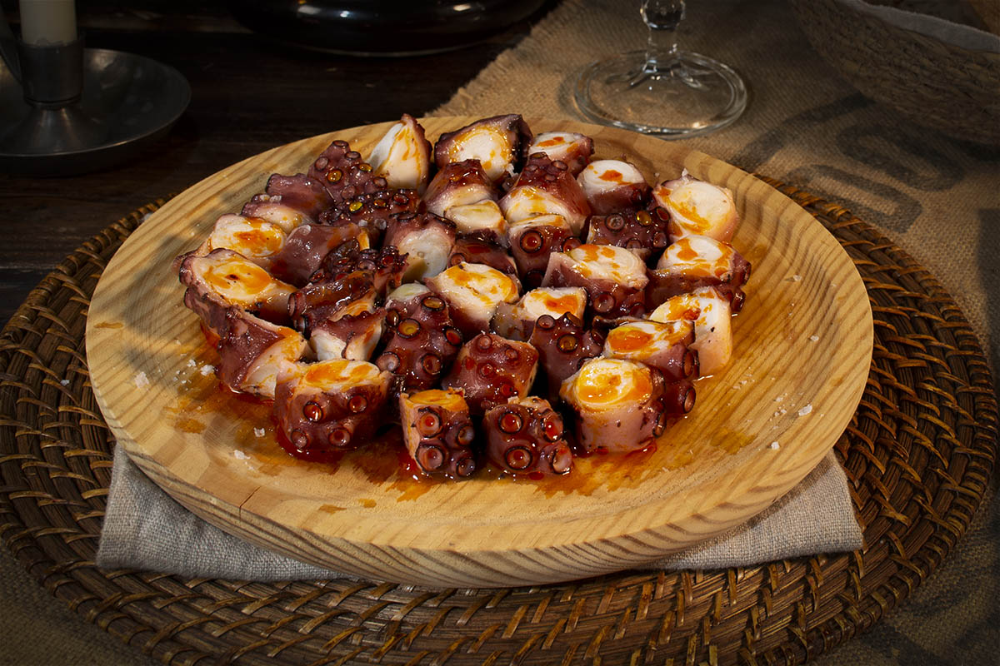
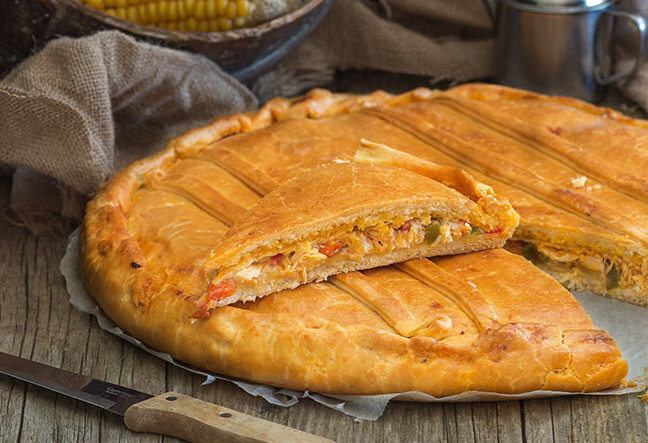
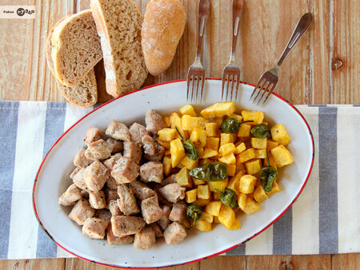
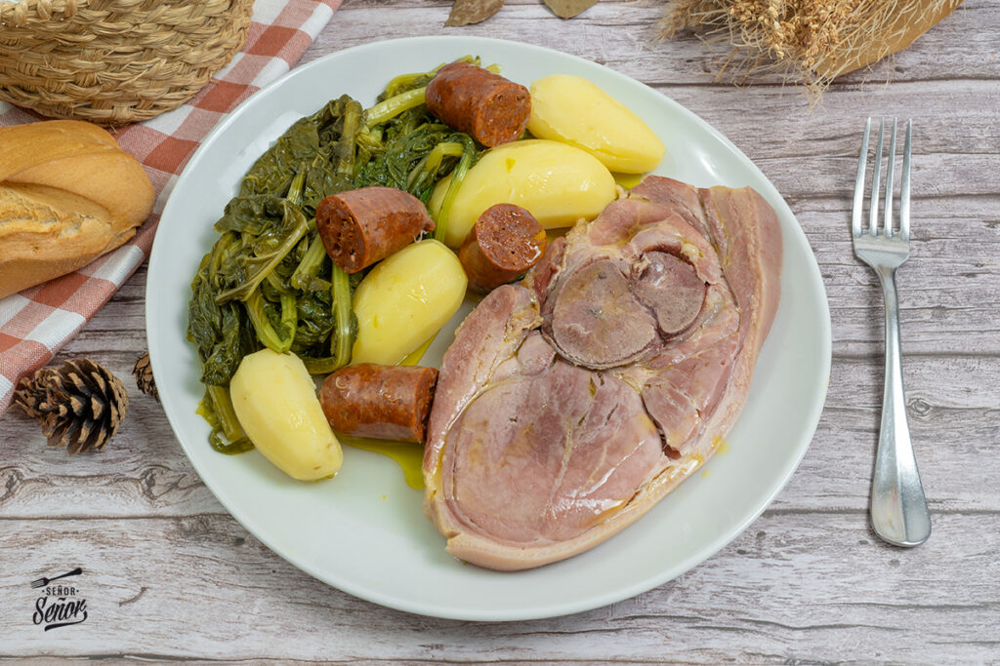
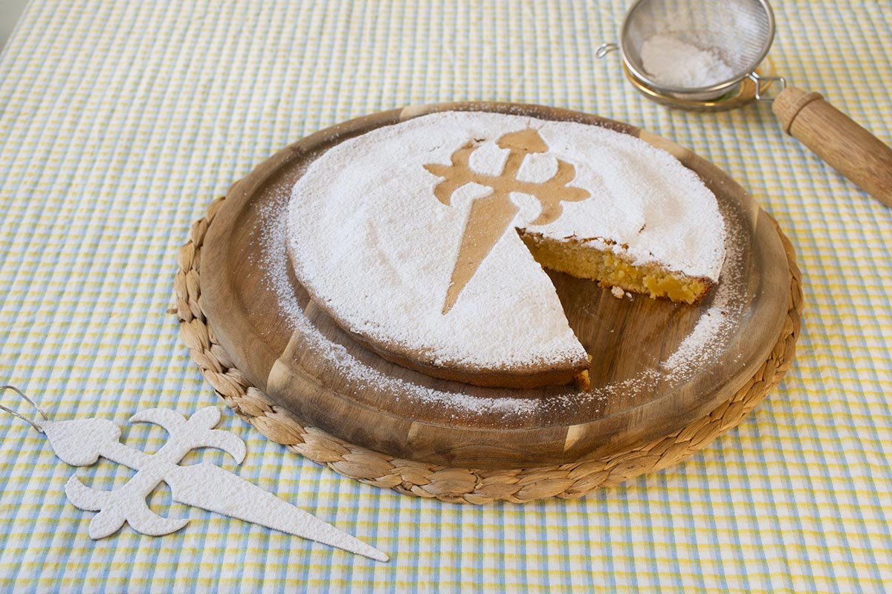
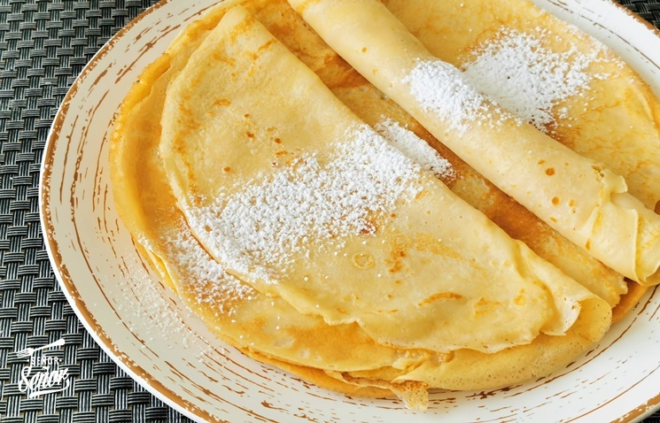
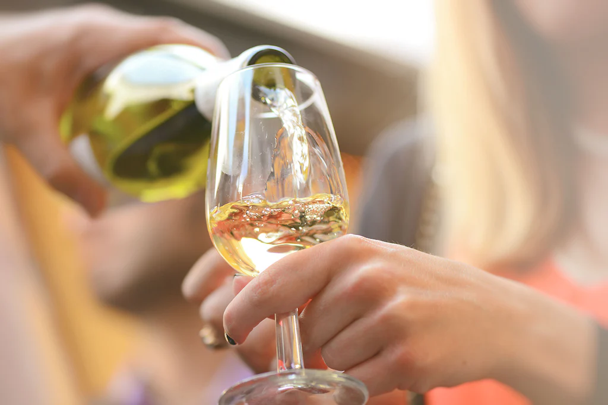

El plato más emblemático de Galicia. Pulpo cocido y cortado en rodajas, aliñado con aceite de oliva, sal gorda y pimentón, servido sobre un plato de madera. Sencillo y delicioso, representa la esencia de la cocina gallega.

Masa fina y crujiente rellena de bonito, carne o marisco. Tradicionalmente elaborada para los marineros, hoy es uno de los platos más queridos y versátiles de la gastronomía gallega.

Trozos de lomo de cerdo adobados con ajo y pimentón, salteados hasta quedar tiernos y dorados. Se sirve con patatas fritas y pimientos de Padrón. Un clásico de las tabernas coruñesas.

Uno de los platos más tradicionales de Galicia. Combina lacón cocido con grelos, chorizo y patatas. Sencillo, contundente y lleno de sabor gallego.

Postre icónico de almendra, azúcar y huevos, decorado con la cruz de Santiago. Su sabor suave y tradicional la convierte en un símbolo dulce de Galicia.

Dulces típicas parecidas a las crepes, elaboradas con harina, leche y huevos. Se disfrutan con azúcar o miel, especialmente durante el Carnaval gallego.

Los vinos gallegos, como el Albariño, Ribeiro o Godello, destacan por su frescura y aroma. Son el acompañamiento perfecto para mariscos, pescados y comidas típicas de la región.
La gastronomía coruñesa es un viaje de sabores atlánticos y recetas tradicionales. Aquí el mar se convierte en el gran protagonista, acompañado de productos frescos de la tierra. Cada plato cuenta una historia. Degustar su cocina es descubrir la esencia gallega en cada bocado.